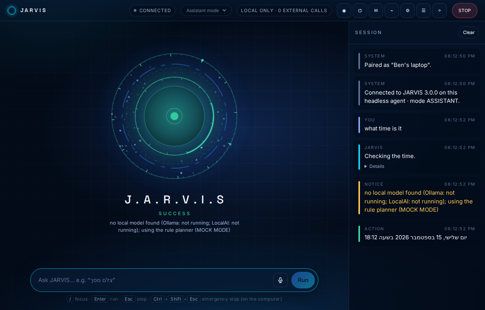
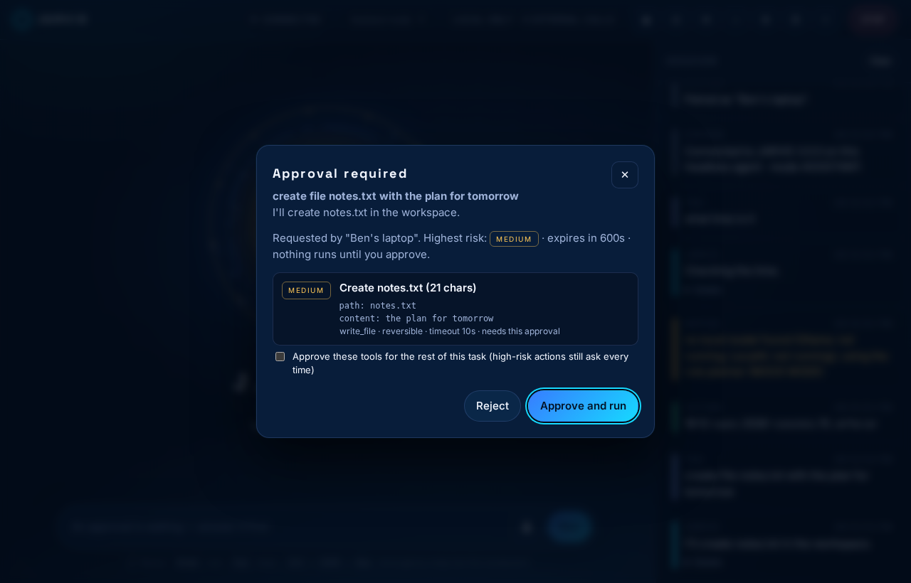

J.A.R.V.I.S
עוזר מקומי · בלי ענן · בלי מפתחות · בלי תשלום
עוזר AI שרץ כולו על המחשב שלך ויכול באמת לשלוט בו: לפתוח תוכנות, לקרוא ולכתוב קבצים, להקליד, ללחוץ, לצלם מסך ולבנות פרויקטים — כל פעולה מסוכנת מוצגת לך ומחכה לאישור.
הדף הזה לא שולט במחשב — וזה לא באג
דפדפן חוסם לגמרי גישה של דף אינטרנט לקבצים, לעכבר ולמקלדת של המחשב. זו הגנה של הדפדפן, ואין דרך לעקוף אותה.
לכן הדף הזה הוא הסבר והורדה בלבד. השליטה האמיתית קורית באפליקציה שמתקינים על המחשב,
והיא זו שמפעילה גם את הממשק שבתמונה למטה (בכתובת http://127.0.0.1:8765).
מהנייד שולטים במחשב דרך אותה אפליקציה, על אותה רשת Wi-Fi, אחרי צימוד עם קוד חד-פעמי — לא דרך הדף הזה ולא דרך שרת באמצע.
מה חינמי כאן, בדיוק
- אין מפתח API, אין חשבון, אין הרשמה, אין כרטיס אשראי ואין מנוי — בשום מקום במוצר.
- אין שרת באמצע, אין ענן ואין ריליי. הכול רץ על המחשב שלך.
- הבינה המלאכותית מקומית: Ollama או LocalAI, לפי מה שמותקן אצלך. אם אין אף אחד מהם — ג'רביס אומר את זה בפירוש ועובר למתכנן כללים דטרמיניסטי (MOCK MODE), בלי להעמיד פנים.
- מה שמורידים בהתקנה: Node.js, Electron, React/Vite — קוד פתוח (רישיונות MIT/Apache-2.0).
- אין אנליטיקות, אין טלמטריה ואין בקשות רקע לענן. גם ההודעות ללקוחות הן טיוטות בלבד — שום דבר לא נשלח.
התקנה — פעם אחת
Windows (הדרך הקצרה)
הורד את ה-ZIP, חלץ למשל ל-C:\JARVIS, ולחץ פעמיים על INSTALL-JARVIS.bat.
כל מערכת הפעלה (שורת פקודה)
git clone https://github.com/benmor042012-maker/jarvis.git cd jarvis npm run setup # מתקין ובונה, ומריץ את כל הבדיקות npm start # פותח את ג'רביס
דרוש Node.js 18 ומעלה. לבינה מלאכותית מקומית (אופציונלי): ollama pull llama3.2.
מהנייד
בהגדרות מפעילים גישה מהרשת המקומית, פותחים Devices → Pair a new device, ומקלידים בנייד את הקוד בן 8 הספרות (או סורקים את ה-QR). אפשר לבטל מכשיר בכל רגע.
רמות ההרשאה
| מצב | מה מותר |
|---|---|
| Safe | קריאה בלבד, ורק פעולות הפיכות |
| Assistant | פעולות רגילות; בינוני וגבוה מבקשים אישור (ברירת מחדל) |
| Advanced | מדיניות משלך לכל כלי — סיכון גבוה עדיין שואל, תמיד |
| Emergency stopped | שום דבר לא רץ, עד שמנקים את העצירה על המחשב |
עצירת חירום: Ctrl+Shift+Esc מכל מקום, או כפתור STOP. היא עוצרת משימות והורגת את כל תת-התהליכים.
מה ג'רביס לא עושה
- לא שולח הודעות, מיילים, ווטסאפ או SMS — אין בכלל קוד שליחה. רק טיוטות שאתה מעתיק ושולח בעצמך.
- לא ניגש לסיסמאות, לעוגיות דפדפן, למפתחות פרטיים או לקבצי סוד.
- לא קונה, לא משלם, לא פותח חשבונות ולא משנה הגדרות אבטחה.
- לא מוחק לצמיתות: מחיקה עוברת לסל של ג'רביס.
- לא שולט במחשב כשהוא כבוי, ישן, מנותק או כשהסוכן עצור — ואז הממשק אומר את זה במפורש ולא מעמיד פנים שהוא מחובר.
איך זה נראה

